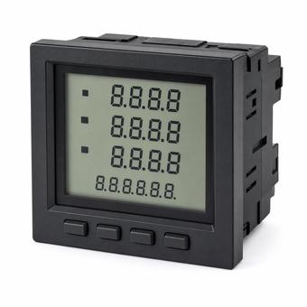

NEC 220.87: Measuring an Existing Load
Adding load to an existing service does not require recalculating the whole building from scratch. Measured demand is allowed to stand in for the calculation, and the conditions attached to that measurement are where it comes apart.

Key takeaways
- Two routes are permitted: one year of maximum demand data, or a continuous recording over at least 30 days.
- 125 percent of maximum demand and adding 25 percent to it are the same arithmetic. Sources that present these as competing methods are describing one method twice.
- The 30-day recording must capture the building occupied and the larger of the heating or cooling load, by measurement or calculation.
- EV charging equipment enters a service calculation at the larger of 7,200 VA or its nameplate rating, with no demand factor.
On this page · 7 sections
Why the section exists
The standard load calculation in Article 220 is built for a building being designed. It works forward from connected load and applies demand factors to arrive at a figure for the service. Run that same calculation on a forty-year-old commercial building and two things go wrong: nobody knows what is actually connected any more, and the result comes back absurdly conservative, because the demand factors assume a diversity the building has already proven it exceeds in the other direction.
220.87 resolves this by letting you measure instead. If the building has been running, its own demand history is better evidence than a calculation from an inventory nobody can verify. This is the section behind nearly every “will my service take this new load” question, and it is the reason a service that fails a paper calculation can still be perfectly adequate.
The two routes
One year of demand data. If maximum demand data for a one-year period is available, the calculated load is permitted to be 125 percent of that maximum demand. This is the preferred route because a full year captures both the heating and the cooling peak without any argument about which season you measured in.
A 30-day recording. Where a year of data is not available, the calculated load is permitted to be based on the maximum demand continuously recorded over a minimum 30-day period, using a recording ammeter or power meter connected to the highest-loaded phase. The demand figure is an average over a 15-minute interval, not an instantaneous peak — which matters, because an inrush spike is not what the section is asking for.
Then the arithmetic: the recorded maximum demand at 125 percent, plus the new load being added, compared against the service rating or the feeder ampacity.
One point worth settling, because the published sources make it look like a disagreement. Some describe the method as 125 percent of maximum demand and others as adding 25 percent to maximum demand. These are the same operation. Multiplying by 1.25 and adding a quarter produce an identical number, and there is no third method hiding behind the difference in wording.
What the recording has to capture
The 30-day route is the one that gets misapplied, because leaving a meter on a panel for a month is easy and the conditions on that month are not obvious.
The recording has to reflect the building occupied. A load study run over a holiday shutdown, or on a tenant space between leases, does not measure the maximum demand of anything. It has to include the larger of the heating or the cooling load, by measurement or by calculation — so a study run in October in a climate with both a winter and a summer peak needs the missing season added analytically rather than ignored. And it has to account for loads that are periodic in nature, the ones that may simply not have run during the window.
This is also why the one-year route is better whenever the data exists. Utility interval data for twelve months answers all three conditions at once, and most utilities will provide it to the account holder on request.
Where the method does not apply
Measured demand is evidence about the building as it was operating during the measurement. Where something is actively shaping that measurement, the evidence no longer describes the underlying load. On-site generation, storage and deliberate peak shaving all do exactly that: they suppress the recorded demand without reducing what the building would draw if the shaping stopped. Several editions restrict the method on that basis, and the restriction is worth checking rather than assumed either way.
The same logic applies informally to any site where the historic demand was limited by something that is about to change. A warehouse recorded while half empty, a restaurant space recorded as a retail unit, a building whose process equipment was idle — in each case the measurement is accurate and irrelevant.
Two further cautions. The method establishes the existing load; the new load is added at its own full calculated value and gets no benefit from the measurement. And this is a section AHJs read closely, since it is the basis on which a service passes without being upgraded, so the load study and its conditions are worth documenting as carefully as the arithmetic.
The EV charger case
Most 220.87 questions now arrive attached to an EV charger, and the EV side has its own rules that the 220.87 result does not override.
Under NEC 220.57, electric vehicle supply equipment enters a service or feeder calculation at the larger of 7,200 VA or its nameplate rating, at 100 percent, with no demand factor applied. The 7,200 VA figure is a floor, not a value: a 40 A EVSE at 240 V is 9,600 VA and enters at 9,600. Article 625 also treats EV charging as a continuous load, which is why no demand factor is available here even though comparable appliance loads get one.
That is what makes the arithmetic tight, and it is also why load management is the usual answer rather than a service upgrade. Where an automatic load management system is installed, NEC 625.42 permits the maximum load on the service or feeder to be the maximum the management system allows, rather than the sum of the connected equipment nameplates. Four chargers behind an enforceable ALMS present as the system limit. The word doing the work is enforceable: the system has to actually constrain the load, not merely schedule it.
Common mistakes
Running the load study while the space is unoccupied or between tenants. Recording in one season and ignoring the opposite peak instead of adding it by calculation. Reading an instantaneous peak off a meter rather than the 15-minute average demand. Treating 125 percent and adding 25 percent as two different methods and wondering which applies. Applying the 125 percent factor to the new load as well as the measured existing load. Giving an EV charger a demand factor. Using measured demand from a site with on-site generation or peak shaving without checking whether the method is available there. Citing section numbers from an edition the jurisdiction has not adopted — Article 220 is reorganized in the 2026 NEC, so the number itself is worth confirming.
Frequently asked questions
Can I use utility bills for a NEC 220.87 calculation?
Yes, if they give maximum demand for a one-year period. That is the first permitted route, and the calculated load is 125 percent of that maximum demand. Most utilities will provide twelve months of interval data to the account holder on request, and it is better evidence than a 30-day study because it captures both the heating and the cooling peak.
Is 125 percent of maximum demand the same as adding 25 percent?
Yes. Multiplying the recorded maximum demand by 1.25 and adding a quarter of it are the same arithmetic. Published sources describe the method both ways, which makes it look like there are two competing methods. There are not.
How long does the load study have to run?
A minimum of 30 days, continuously recorded, using a recording ammeter or power meter on the highest-loaded phase. Length alone is not enough: the recording has to reflect the building while occupied and include the larger of the heating or cooling load, by measurement or by calculation, along with loads that run only periodically.
Does an EV charger get a demand factor in the calculation?
No. EV supply equipment enters a service or feeder calculation at the larger of 7,200 VA or its nameplate rating, at 100 percent. Article 625 treats EV charging as a continuous load. The route to a smaller number is not a demand factor but an automatic load management system, which under NEC 625.42 lets the service see the limit the system enforces rather than the sum of the nameplates.
Next steps
The continuous-load factor that governs the new circuit is covered in the 80% rule and continuous loads, and the conductor itself comes out of the wire size calculator.
Run the numbers
- Wire Size CalculatorThe conductor for the new load, with both NEC checks run.
- kW to Amps CalculatorConverting a demand figure in kW to the current the service sees.
- Voltage Drop CalculatorWhether the run length forces the conductor up.
Cite or link to this guide
Free to quote with attribution. Suggested citation: Voltfield Editorial Team, “NEC 220.87: Measuring an Existing Load” Voltfield, updated September 29, 2026. https://voltfield.org/guide-grid-forming-vs-grid-following.html
Get new guides by email
One short email when a new guide or calculator is published, at most once a month. Your address is used for nothing else.